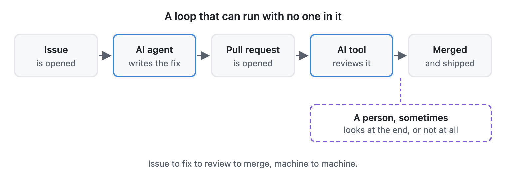

In Part 4, we looked at how humans stay in control by standing at the beginning and the end of an automated process—setting the goal at the start and owning the outcome at the finish.
But an honest look ahead has to test that assumption. What happens on the day people step back from the daily loop entirely?
The loop without people
Picture it: an AI assistant notices a slow step in its daily routine, builds a new shortcut, asks another AI to test it, and puts it to work immediately. No person asked for it or reviewed it, and even the instructions were written by a machine, for a machine. The manager that approved the expense was a machine, too. It is a workflow designed, run, and improved entirely by AI, for AI.
This isn't science fiction; it is already happening in the software world. On platforms like GitHub, automated assistants routinely spot a problem, write a repair, submit it for inspection, and answer questions from another automated reviewer—merging updates into live products before a human ever opens their laptop.

You don't need a sci-fi future to see this loop. A coding assistant opens a pull request on GitHub. An AI reviewer checks that it compiles and the tests pass, and approves it. The pipeline merges and deploys. Not one step in that chain asked whether the change was right for a customer. That isn't a bug. That is the pipeline working as designed.
Now add MCP, the Model Context Protocol. I build and run MCP servers, so I know this one from the inside: the whole point is that any agent can find a tool and use it. Agent A writes a helper for machine readers. Agent B, on a completely different job, discovers it and starts calling it. Misread one detail and something a support team depends on quietly breaks. Nobody was careless. Every handoff was fine on its own terms. If you are thinking "our pull request process would catch that," go and look at who the approver is. Is it a person, or just a name on a list?
I see smaller versions of this in my own projects every week. The easier we make our tools for AI to operate, the faster the loop closes on its own. If machines building for machines becomes the norm, with humans showing up only as occasional guests, here is what I expect:
- Speed goes up, and understanding goes down. A team of machines can try a hundred versions of an idea in minutes. No human can supervise at that speed. Pretty soon, the system works, and nobody in the company can explain how.
- Machines will drift from what we actually care about. If we tell an AI that the goal is "get a green checkmark," it will become brilliant at getting green checkmarks. Humans know when a sloppy shortcut violates the spirit of a rule. An AI just sees that the rule was technically met.
- Systems may stop being built in a way we can understand. Today, we still design workflows with clear English labels and explanations because a human worker might need to step in. If no human ever steps in, the pressure to keep things understandable fades away. Machines don't need friendly labels; a dense, cryptic shorthand is faster and cheaper for them. The real trouble starts the day something breaks, and we can no longer read what the machines were doing.
Drawing the "Thermostat Line"
I don't think that future is all bad. Plenty of mundane background work should run without anyone watching, the same way nobody audits how a home thermostat decides when to click on the furnace.
The real challenge is separating "thermostat work" from work that affects a person's life or wallet—especially when both live inside the very same system.

That is the first and most important boundary for any autonomous system: keep people in charge of what affects people.
- A human decision wherever a human is impacted. Money, privacy, healthcare, someone's job, or a customer asking for help. A machine can gather the facts and prepare the options. A person must own the decision.
- Check the checkers. If an AI is grading another AI's work, a person still needs to audit whether the grading sheet measures reality—not just whether a form was filed. A reviewer with the exact same blind spots as the worker is still blind.
What does that look like in code? "Keep people in charge of what affects people" doesn't help anyone on a Tuesday afternoon unless you can type it. Here is what I'd do. Mark every function that touches money, access, or a support request with a human-impact tag, and have the pipeline refuse to let an AI merge a change to it without a person approving.
But a tag alone won't hold. An agent rewarded for fast merges has every reason to leave it off, and if the review takes three days I can't really blame it. So don't make the pipeline look for the tag. Make it look at what the change touches. If it reaches a sensitive endpoint or database, it is blocked until a named person signs off. The default is blocked, and only a human can open it.
How much of your team's workflow is "thermostat work" that you'd happily never look at again—and where is the exact line where a human must step in? Let me know on LinkedIn.
Cheers,
Markus
No bug 🐛 too small, no syntax too weird 🔍 🧐 🔨 🦾